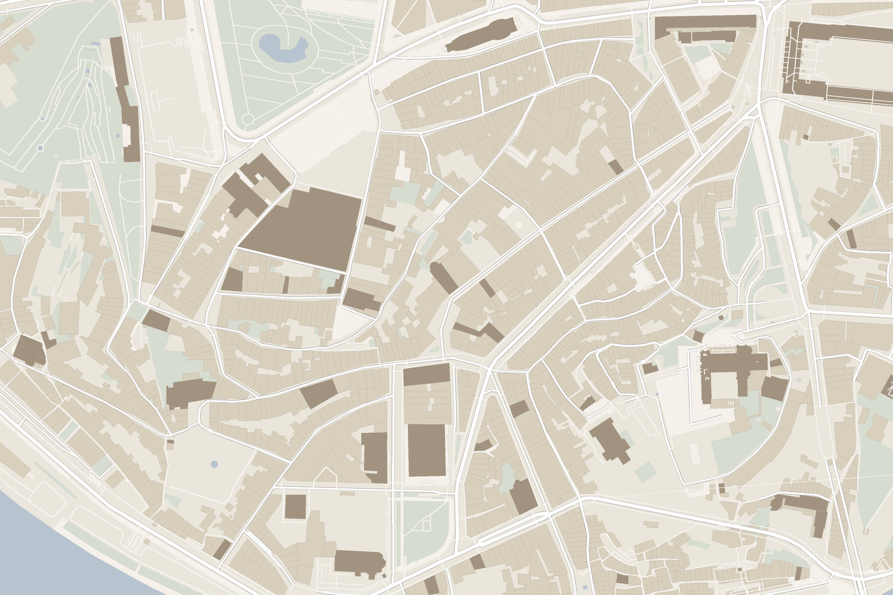
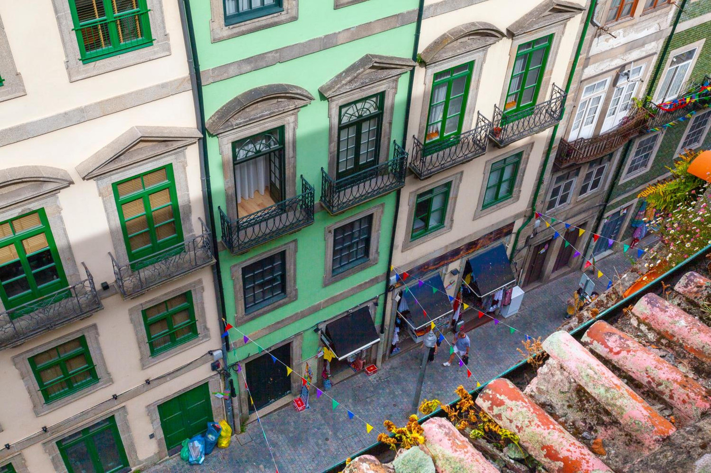
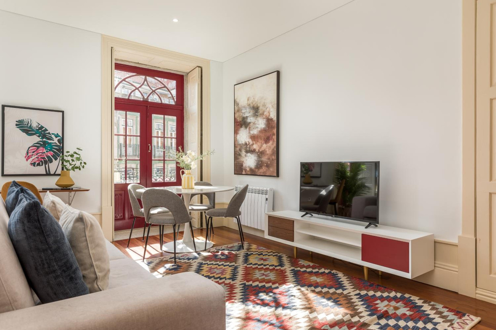

Apartments2Stay Apartamentos Discovery
Discovery
Largo de São Domingos · Rua das Flores, Porto
- 35 m²de área
- 1quarto
- 1casa de banho
- 2pessoas
- Janela para o pátio de azulejos
- Máquina de lavar e secar roupa
- Entrada privativa
O apartamento
Um estúdio de 35 m² no 3.º andar de um prédio do Largo de São Domingos, onde começa a Rua das Flores. Sobe-se por escadas: o prédio não tem elevador.
Tem um quarto com cama de casal grande, cozinha completa, casa de banho privativa com duche e entrada privativa. A janela dá para o pátio interior, com painéis de azulejo.
O que oferece
- Wi-Fi gratuito
- Cozinha com forno, fogão e frigorífico
- Máquina de lavar loiça
- Máquina de lavar e secar roupa
- Máquina de café e chaleira
- Casa de banho privativa com duche
- Entrada privativa
- Vista para o pátio interior
Horários e regras
- Check-in
- A partir das 16:00
- Check-out
- Até às 11:00
- Hora de chegada
- Avisar com antecedência
- Fumar
- Não
- Festas
- Não
- Animais
- Não
- Berços e camas extra
- Não há
- Acesso
- 3.º andar, sem elevador
Do anúncio no Booking (novembro de 2026), a confirmar com a Apartments2Stay.
Localização
Largo de São Domingos, 68, 3.º trás4050-545 Porto

Rua de Mouzinho da SilveiraTúnel da RibeiraAvenida Dom Afonso HenriquesCampo dos Mártires da PátriaRua dos ClérigosRua de TrásRua de Ferreira Borges Palácio da BolsaMSão BentoMuralhas Fernandinas do PortoHard ClubPalacete de BelomonteAntiga Cadeia e Tribunal da Relação do PortoFeitoria BritânicaTorre Medieval Discovery | Porto-Flores 200 m- Palácio da Bolsa250 m
- Ribeira350 m
- Estação de São Bento400 m
- Estação do Infante400 m
Distâncias aproximadas, calculadas pelo Booking.
Como chegarApartments2Stay
Outras formas de ficar.
-

Casas do Pátio
12 tipologias · 22 a 80 m² · Ribeira
Estúdios e apartamentos na Ribeira, a menos de 300 m do rio.
Ver o apartamento -

Flores
Estúdio 35 m² ou Superior 46 m² · até 2 pessoas
Dois tipos de apartamento num prédio antigo do Largo de São Domingos, com varanda sobre o largo.
Ver o apartamento
Discovery | Porto-Flores 13 fotografias